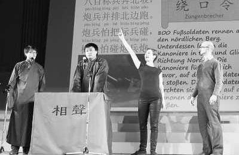

现任艺术职务
| 中国曲艺家协会 | 会员 |
| 国际说唱艺术联盟 | 理事 |
| 德国曲协 | 主席 |
| 德国中华文化促进会 | 副会长 |
| 德国中华民乐社 | 社长、编曲、指挥 |
社会活动经历
| 法兰克福大学生中文话剧节 | 评委 |
| 柏林中国学友合唱国 | 即兴伴奏、排练指挥、合唱作词、男低音 |
| 德国日本协会混声合唱团 | 理事、男高音 |
| 德国华人钢琴即兴伴奏俱乐部 | 发起人、执教公益伴奏课程 |
| 柏林喜歌剧院 | 特邀演奏员 |
演出经历摘要
2009年以来欧洲各国历年华人春节联欢晚会相声、民乐、伴奏、乐队指挥等演出 春晚巡演德国近三十个城市以及奥地利、 比利时、波兰、西班牙等国，城市包括： 柏林、法兰克福、慕尼黑、杜塞尔多夫、 汉堡、德累斯顿、科隆、波恩、汉诺威、 不来梅、哥廷根、卡尔斯鲁厄、弗来堡、 斯图加特、马格德堡、布伦瑞克、埃森、 弗莱堡、沃尔夫斯堡、亚琛、帕德博恩、 克劳斯塔尔—采勒菲尔德、达姆施塔特、 凯撒斯劳滕、波鸿、格赖夫斯瓦尔德、 格拉茨、林茨、因斯布鲁克、瓦伦西亚、 鲁汶、华沙等 |
 |
2013年德国柏林“中德语言年”闭幕式文艺演出担任总导演、撰稿，参与多个节目演出 由中华人民共和国驻德意志联邦共和国 大使馆、教育处举办 |
 |
2015年中华人民共和国驻德意志联邦共和国大使馆新春招待会暨文艺晚会 担任节目遴选、钢琴伴奏工作 |
中华人民共和国驻德意志联邦共和国大使馆商务处新春商务招待会 担任总策划、主持人，参与演出工作 |
2016年以来德国曲协德国和欧洲相声专场担任策划人和相声演出工作 【相声吧德】德国首次本土曲艺社专场 【柏您一笑】柏林相声专场演出 【布伦之恋】布伦瑞克相声专场演出 【埃你一森】埃森相声专场演出 【啊哼亚琛】亚琛相声专场演出 【马德执掌】马格德堡相声专场演出 法兰克福游船庆典相声专场演出 波兰华沙新春相声曲艺专场演出等 |
 |
2016年以来个人独奏音乐会以及率团举办音乐会受中、欧各国官方文化交流机构邀请 北京市旅游局华沙文化推广活动暨音乐会 北京电视台与德国媒体战略合作签约暨音乐会 海南省旅游局柏林文化推广活动暨音乐会 浙江省旅游局柏林文化推广活动暨音乐会 柏林—北京友好城市25周年柏林音乐会 柏林市动物园欢迎中国大熊猫专场音乐会 柏林世界公园中秋独奏音乐及历年几十场演出 柏林孔子学院新年音乐会 柏林孔子学院“科学长夜”中国文化音乐会 不来梅孔子学院春节音乐会 不来梅五大洲文化节闭幕式个人独奏音乐会 不来梅福克博物馆世界文化音乐会 法兰克福孔子学院线上音乐会（疫情期间） 法兰克福书展莫言《带灯》发布会暨音乐会 杜塞尔多夫中国文化节民乐专场 马格德堡中德大学教育合作春节招待音乐会 伍珀塔尔亚洲艺术博物馆中秋文艺晚会 卡尔斯鲁厄德中友好协会中华文化进校园活动 巴登苏尔察温泉水下音乐会 |
|
2018年第六届德国中国曲艺周柏林专场表演相声《杂学唱》，首创德国字幕相声 赴卢森堡参加国际说唱艺术联盟筹备会议 |
|
2019年第七届德国中国曲艺周汉堡和柏林专场表演相声《欢声笑语》，与中国艺术大师同台 |
|
2019年首届世界幽默艺术节（卢森堡）担任总导演 中、日、加、卢、德、法等国著名艺术家参演 |
|
2020年 — 2021年“大爱无疆”大型全球华人线上抗疫晚会、北德地区春节晚会、法兰克福孔子学院春晚 等各种在线直播晚会 根据传统相声《酒令》改编抗疫题材相声《英雄令》 组织德国曲协集体创作抗疫题材快板《宰相蓬甩锅》 线上合唱作品《花瓣》混音、剪辑和后期工作 线上音乐会钢琴伴奏、混声、 |
获奖情况摘要
| 2005 | “统一100杯”上海市创意表演大赛 | 创作、表演相声作品《洗澡》获第一名 |
| 2015 | 克劳斯塔尔—采勒菲尔德春晚 | 相声表演获观众现场票最佳节目第一名 |
| 2016 | 哥廷根春晚 | 创意民乐表演获观众现场票最佳节目第一名 |
| 2017 | 伍珀塔尔中秋文艺晚会 | 单口相声表演获最佳表演奖 |
| 2018 | 哥廷根春晚 | 创意民乐表演、相声表演分获观众现场票最佳节目第一、第二名 |
| 2019 | 慕尼黑春晚 | 创意民乐表演和相声表演分获观众现场票最受欢迎节目奖 |
| 2019 | 第十四届中国国际合唱节 | 作词和合唱谱改编作品《花瓣》获银奖 |
艺术讲座摘要
| 2018 | 《学术与艺术》 | |
| 2019 | 《从剧本到舞台：业余表演爱好者的自我训练》 |